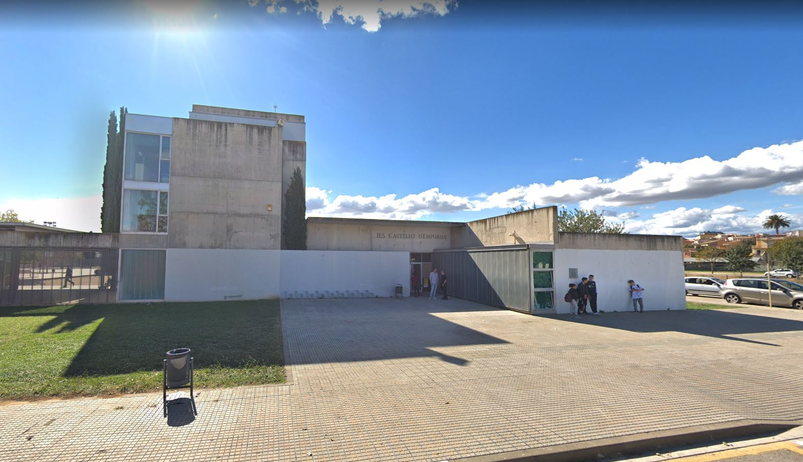
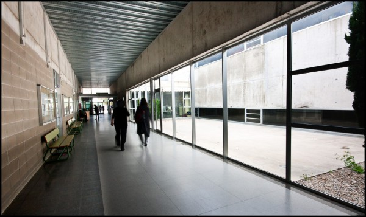
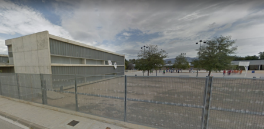

INICI
NOTICIES
EINES
CALENDARI
ENTRAR
L’INS Castelló d’Empúries és un centre públic que neix l’any 1996 amb la implantació de la LOGSE. L’institut es manifesta laic, pluralista i respectuós amb la diversitat d’idees i creences.

L’INS Castelló utilitza el català com a llengua d’instrucció-aprenentatge i d’ús administratiu, per la qual cosa ha adequat mitjans i recursos per tal que el català sigui la llengua de comunicació en aquests àmbits.

Així mateix, la tolerància ha de ser un del valors que ha d’orientar les relacions interpersonals dins del Centre per la qual cosa cap membre de la comunitat educativa podrà ser discriminat per la seva llengua, pel seu sexe, per la seva religió…

🡹